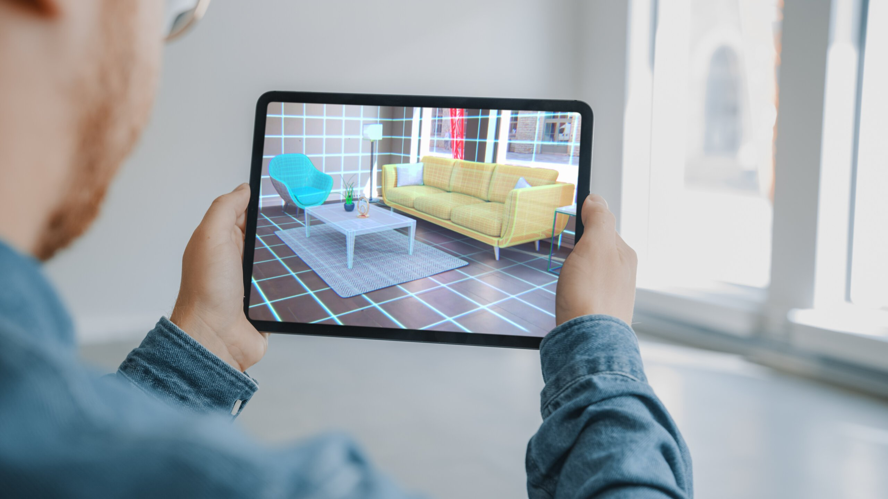
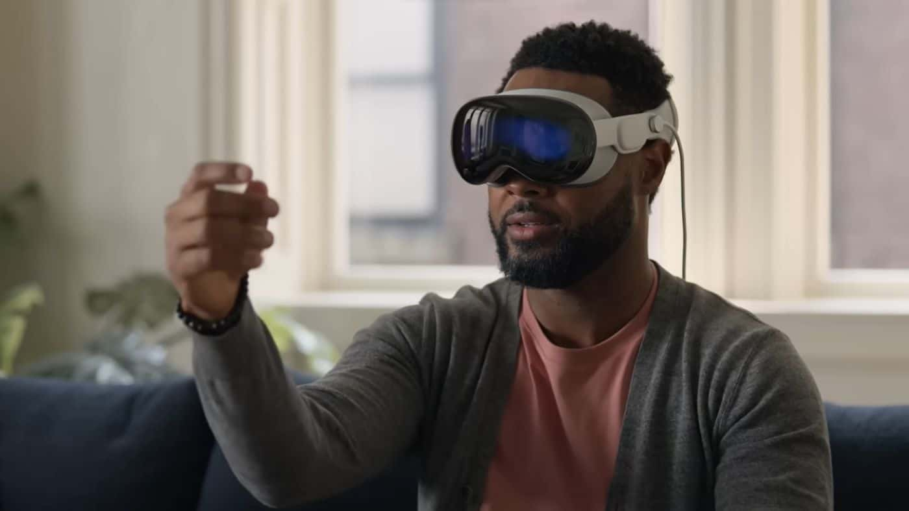
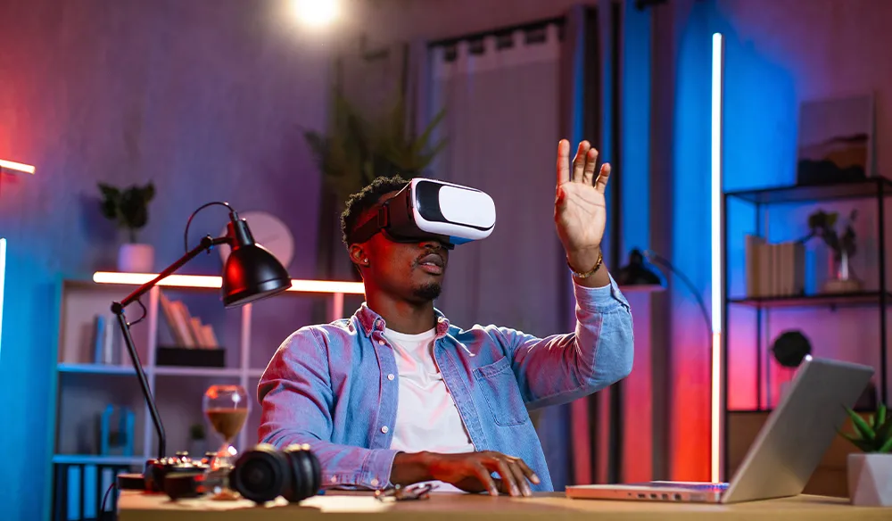

AUGMENTED REALITY


Augmented reality (AR), also known as mixed reality (MR), is a technology
that overlays real-time 3D-rendered computer graphics onto a portion of
the real world through a display, such as a handheld device or
head-mounted display. This experience is seamlessly interwoven with the
physical world such that it is perceived as an immersive aspect of the
real environment.In this way, augmented reality alters one's ongoing
perception of a real-world environment, compared to virtual reality, which
aims to completely replace the user's real-world environment with a
simulated one.Augmented reality is typically visual, but can span multiple
sensory modalities, including auditory, haptic, and somatosensory.The
primary value of augmented reality is the manner in which components of a
digital world blend into a person's perception of the real world, through
the integration of immersive sensations, which are perceived as real in
the user's environment. The earliest functional AR systems that provided
immersive mixed reality experiences for users were invented in the early
1990s, starting with the Virtual Fixtures system developed at the U.S. Air
Force's Armstrong Laboratory in 1992. Commercial augmented reality
experiences were first introduced in entertainment and gaming
businesses.Subsequently, augmented reality applications have spanned
industries such as education, communications, medicine, and
entertainment.
Augmented reality can be used to enhance natural environments or
situations and offers perceptually enriched experiences. With the help of
advanced AR technologies (e.g. adding computer vision, incorporating AR
cameras into smartphone applications, and object recognition) the
information about the surrounding real world of the user becomes
interactive and digitally manipulated.Information about the environment
and its objects is overlaid on the real world. This information can be
virtual or real, e.g. seeing other real sensed or measured information
such as electromagnetic radio waves overlaid in exact alignment with where
they actually are in space.Augmented reality also has a lot of potential
in the gathering and sharing of tacit knowledge. Immersive perceptual
information is sometimes combined with supplemental information like
scores over a live video feed of a sporting event. This combines the
benefits of both augmented reality technology and heads up display
technology (HUD).
Augmented reality frameworks include ARKit and ARCore. Commercial
augmented reality headsets include the Magic Leap 1 and HoloLens. A number
of companies have promoted the concept of smartglasses that have augmented
reality capability. Augmented reality can be defined as a system that
incorporates three basic features: a combination of real and virtual
worlds, real-time interaction, and accurate 3D registration of virtual and
real objects.The overlaid sensory information can be constructive (i.e.
additive to the natural environment), or destructive (i.e. masking of the
natural environment).As such, it is one of the key technologies in the
reality-virtuality continuum.Augmented reality is largely synonymous with
mixed reality. There is also overlap in terminology with extended reality
and computer-mediated reality.
VIRTUAL REALITY


Virtual reality (VR) is a simulated experience that employs 3D near-eye
displays and pose tracking to give the user an immersive feel of a virtual
world. Applications of virtual reality include entertainment (particularly
video games), education (such as medical, safety, or military training)
and business (such as virtual meetings). VR is one of the key technologies
in the reality-virtuality continuum. As such, it is different from other
digital visualization solutions, such as augmented virtuality and
augmented reality.
Currently, standard virtual reality systems use
either virtual reality headsets or multi-projected environments to
generate some realistic images, sounds, and other sensations that simulate
a user's physical presence in a virtual environment. A person using
virtual reality equipment is able to look around the artificial world,
move around in it, and interact with virtual features or items. The effect
is commonly created by VR headsets consisting of a head-mounted display
with a small screen in front of the eyes but can also be created through
specially designed rooms with multiple large screens. Virtual reality
typically incorporates auditory and video feedback but may also allow
other types of sensory and force feedback through haptic technology.